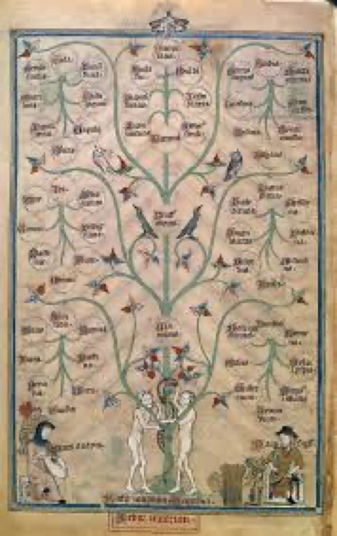
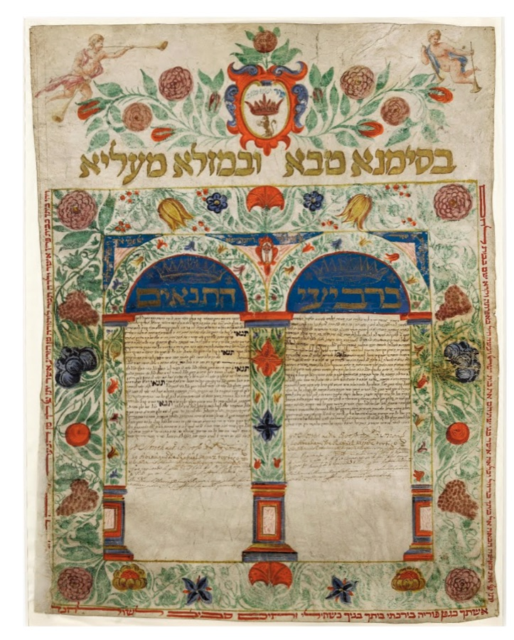
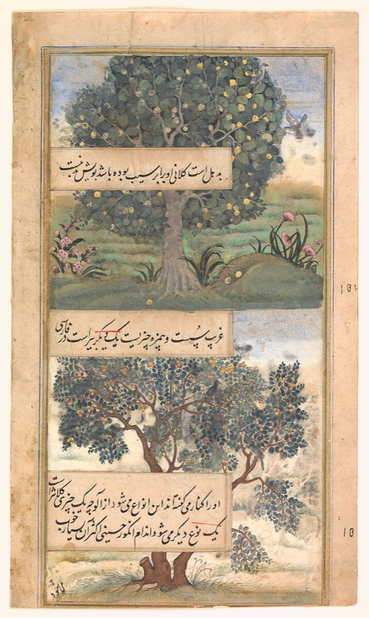
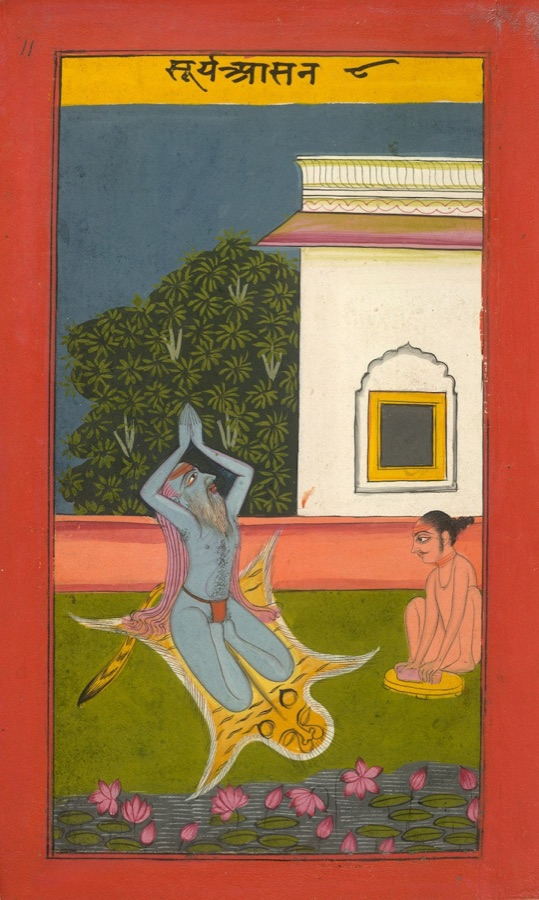
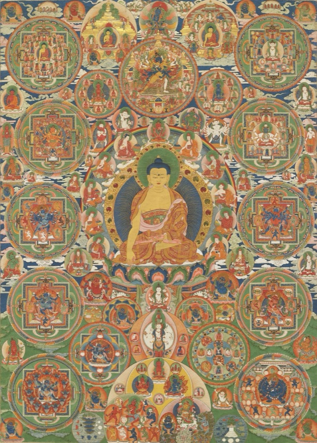

A vision — the Luminous Archive
Not a database you query. A garden you walk.
The ache
We live in a relativist landscape. The old containers feel either like walled gardens you must convert to enter, or museum pieces behind glass. A growing number of people — the spiritually curious, the institutionally homeless — want the robustness of a tradition without being asked to swallow it whole.
So here is the question underneath the whole project: is anything portable across how humans have made meaning? Are there observations about suffering, attention, the self, and time that recur across traditions that never touched — things you could carry with you without converting? Most of what any tradition says is its own; that's the point. But where the same move surfaces independently, again and again, that convergence is worth seeing. We have never had a way to see it.
The vision
The Luminous Archive is an interactive constellation of what 400+ traditions have independently observed about creaturely life. You don't read about religion. You wander among the traditions as flowers, rooted in the soil of their conditions (the where, when, and how-the-world-was), and as you move, the interface reveals where they rhyme — the same gesture appearing in a Buddhist sutra, a Christian epistle, and a Sufi poem that never met.
Spirituality is the attention that makes the in-between visible. The garden is a machine for that attention.
It holds two questions at once: Q1 — what does each tradition, on its own terms, observe? And Q2 — which of those observations converge, and what do the cross-tradition patterns tell us? Convergence across traditions that share no history is interesting precisely because most of what gets observed won't converge. The garden makes both the difference and the rhyme walkable.





The same form — the tree of life, the concentric cosmos — arising independently across traditions that never met. (more imagery in the full moodboards — kept private for now)
How it fits together
The project is one thing seen at three depths: the engine that finds the patterns, the voice that tells them, and the garden you'll one day walk. The same convergence flows through all three.
400+ traditions ingested, coded in each tradition's own vocabulary, with a multi-model convergence-engine detecting where they rhyme. The substrate — where the observations and the patterns actually come from.
🟢 built & runningThe public inquiry — field notes on how meaning gets made. An essay engine turns what the corpus surfaces into readable essays. This is the project thinking out loud, now.
✅ live grammarofmeaning.substack.com → the essay engine →The destination — the interactive pilgrimage anyone can walk (this pitch). Where the corpus becomes a place and the rhymes become something you move through.
◌ the horizon we're buildingOne convergence, three depths: found in the engine → told in the voice → walked in the garden. (Byline → inquiry → object: Tamara Sanderson is who; Grammar of Meaning is what she studies; the Luminous Archive is what she's building.)
Why now · why this
This sits in a clear line of people who tried to make the world's knowledge accessible and patterned. What's new is the open methodology and that the patterns are derived corpus-driven — empirically, at scale — rather than from one mind's intuition.
Alexander found his patterns by discernment; we derive them from the corpus. Meadows mapped archetypes across ecology and economics; this is the empirical Meadows for the inner life. Smil withholds his method; we publish the corpus, the methodology, and the tooling so others can extend, audit, and contest it. And the moment is now: AI makes it possible — for the first time — to read across hundreds of traditions at corpus scale and detect structural rhymes empirically, with multiple models cross-checking each other so no single reading fixes the finding.
The experience
A pilgrimage, not a search bar. One path through:
The design language we already have
This isn't a sketch on a napkin — there's a worked visual vocabulary (the S107 design-pattern moodboard) and a working method-instrument behind the beauty.
Tree (lineage) · Mandala / Labyrinth (the centre) · Scroll / River (the read). Each tradition picks its native form.
Wayfinding, stamps, a path that becomes yours — the journey is the interface.
Every observation is rooted in its Sitz — the conditions that made it legible. Read slow, read grounded.
The garden offers what you didn't ask for — designed serendipity, not a ranked list.
The material surface carries the context — the colour and grain of a tradition come from its own art.
Under the beauty, an interactive schema that makes the method auditable — the open "how."
References — what it's like
What it is not
Not a business. The Archive itself never monetizes — money would commodify the pilgrim's interiority and corrupt the design. It's a sanctuary, funded through an academic / non-profit home.
Not a syncretism-blender. It does not melt traditions into one mush. It honours difference first, and shows rhyme — structural convergence — never sameness. The 80% that doesn't converge is shown too.
Not dogma, and not vibes. Every claim is sourced, every convergence is a candidate tested by multiple independent readers, and the method is published so you can contest it.
The invitation
The substrate exists: a 400+-tradition corpus, a working convergence-engine, a published methodology. The Phase-3 object — the garden itself — is the decade-scale horizon.
The frontier we'd most want a collaborator on:
If any of that quickens something in you — that's the conversation.